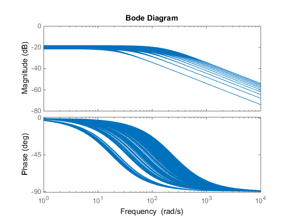

UPSS - Uncertain parameter-varying state-space model
Contents
Syntax
S = upss(Data,Domain)
Description
S = upss(Data,Domain) creates an uncertain parameter-varying state-space model defined on an N-dimensional rectangular grid. Domain is an rgrid object that specifies the N independent variables and the rectangular grid domain. Data is an N-dimensional uncertain state-space array that specifies the uncertain state-space data. Note that Data must contain the same uncertainty structure across the array dimensions. Data(:,:,i1,...,iN) is the model evaluated at the point Domain(i1,....,iN).
Example:
% Create a 1-by-1 uncertain, state-space model defined on a % 1-dimensional grid IVData = linspace(2,20,10); Domain = rgrid('a',IVData); theta = ureal('theta', 10,'Range',[8 12]); for i=1:length(IVData) Data(1,1,i) = ss(-IVData(i)*theta,IVData(i),1,0); end US = upss(Data,Domain)
UPSS with 1 States, 1 Outputs, 1 Inputs, Continuous System. The UPSS consists of the following blocks: a: Gridded real, 10 points in [2,20], rate bounds [-Inf,Inf]. theta: Uncertain real, nominal = 10, range = [8,12], 1 occurrences
Overlay Bode plots at each independent variable
bode(US);